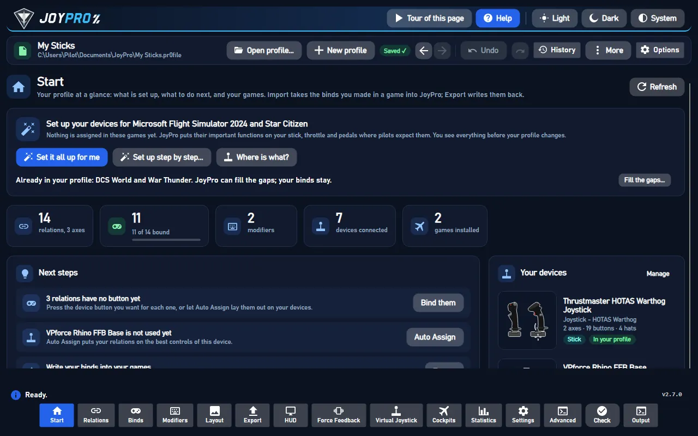

Coinníonn DCS a rialuithe in aghaidh an aerárthaigh agus in aghaidh na feiste: tá a cheangail féin ag gach modúl ar do mhaide, agus cuireann DCS a cheangail réamhshocraithe féin le gach feiste. Léann JoyPro na comhaid seo isteach i bpróifíl amháin, ligeann sé duit gaolta a thógáil a chlúdaíonn d'aerárthaigh go léir ag an am céanna ("Gear" san F-16C, san F/A-18C agus san A-10C II) agus scríobhann sé ar ais iad i gcomhaid gach aerárthaigh. Ní ritheann aon rud fad a eitlíonn tú: léann DCS a chomhaid féin mar a dhéanann sé i gcónaí.
DCS World dúchasach (a chomhaid cheangail féin)
- Tacaíocht
- dúchasach (a chomhaid cheangail féin)
- Ordú an innill
engine dcs- Comhad ceangail
Saved Games\DCS\Config\Input\<aircraft>\joystick\<device>.diff.lua(Lua diff), méarchlár agus modifiers.lua; comhad tionlacain.jp- Ionchuir a léann an cluiche
- léann sé 128 cnaipe, 8 n-ais, 4 hata in aghaidh an joystick (doiciméadaithe)
- Liosta orduithe ó
- comhaid Lua ionchuir na suiteála, á rith ag
luae.exeDCS féin (fanann DCS dúnta) - Tástáil sa chluiche
- 56/56 céim curtha i gcrích (2026-10-11)
- ✓ Iompórtáil
- ✓ Easpórtáil
- ✓ Ceangail mhéarchláir
- ✓ Mionathraitheoirí
- ✓ Liosta orduithe tógtha ar do PC
- ✓ Faire cluichí
- ✓ Cuair aise agus criosanna marbha
- ✗ Socruithe rialaithe an chluicheCoinníonn DCS a shocruithe aiseolais fórsa in aghaidh na feiste agus an aerárthaigh (FF Tune), féach Aiseolas fórsa sa chluiche; níl aon socruithe rialaithe don chluiche ar fad le bainistiú.
- ✓ Socruithe aiseolais fórsa sa chluiche
- ✓ Aiseolas fórsa ó telemetry
- ✓ Taifeadadh telemetry
- ✓ Joystick fíorúil (vJoy)
- ◐ Pad Xbox fíorúil
- ✓ Feidhmeanna fíorúla
- ✓ Draoi socraithe / Sann go hUathoibríoch
- ✓ Cabáin
- ✓ Bileoga tagartha
- ✓ Tástáil sa chluiche
Ón maitrís tacaíochta, ginte ó chód an innill: gach cluiche.
#Cuir ag obair é i 3 chéim
- Socraigh gach rud dom
ar an leathanach Tús - Úsáid na cnaipí seo
féach ar an liosta ar dtús - Scríobh i mo chluiche
coinnigh DCS dúnta
Roimh ré: má iarrann cárta DCS ar an leathanach Tús liosta orduithe, brúigh Tóg Liosta ar dtús.
Ansin: tosaigh DCS. Tá do cheangail in Options > Controls, do gach aerárthach.
Ar cheangail tú cnaipí in DCS roimhe seo? Tairgeann an leathanach Tús Iompórtáil, ansin líon na bearnaí ansin. Fanann do cheangail, agus ní fhaigheann ach cnaipí saora jabanna nua. Féach Tús tapa: cuir mo mhaide ag obair.
#Cá háit ar chóir feidhmeanna a chur?
Cuireann an socrú ceist mhór amháin, le sleamhnán. Is in DCS is mó a bhfuil tábhacht léi, mar eitlíonn tú go leor aerárthaí éagsúla.
| Ceann clé | Ceann deas |
|---|---|
| An cnaipe céanna don jab céanna i ngach aerárthach | Mar atá san fhíoraerárthach |
| Tá an fearas tuirlingthe ar an gcnaipe céanna i ngach eitleán. Éasca le foghlaim. | Déanann gach cnaipe an rud a dhéanann cnaipe an fhíormhaide san áit sin. |
Úsáideann an socrú tapa do rogha dheireanach (an lár ar dtús). Ní bhogann an gunna ná an sconna riamh. Féach Cá háit ar cheart d'fheidhmeanna dul?.
#Féach thart gan rianú cinn
Gan TrackIR, gan VR? Cuireann an socrú féachaint thart ar hata amháin de do mhaide: ar aghaidh, siar, ar clé agus ar dheis. Is féidir le maide ordóige ar do sconna na haiseanna féachana a fháil. Féach Rianú cinn agus féachaint thart.
Cuireann an socrú ceist amháin ar dtús: An úsáideann tú rianú cinn nó VR? Tá (rianú cinn, rianú aghaidhe, Tobii nó VR, nó tá sé beartaithe agat ceann a fháil): gan cnaipí radhairc ar do chuid feistí, ach "athlárnaigh an radharc" amháin. Níl: faigheann féachaint thart áit mhaith ar hata de do mhaide.
#Do cheangail ar an kneeboard
Is féidir le DCS leathanach in aghaidh an aerárthaigh a thaispeáint ar a kneeboard. Cuireann JoyPro liosta de do chnaipí ansin: oscail Leagan amach, brúigh Bileoga tagartha, ansin Cuir ar an kneeboard. Sa chábán píolóta, oscail an kneeboard: tá do leathanach ann. Féach Féach mo cheangail ar kneeboard DCS.
#An méid a dhéanann JoyPro do DCS
- Iompórtáil: tagann ceangail gach aerárthaigh ar do mhaidí, do sconnaí agus do phedail isteach i do phróifíl, le do mhionathraitheoirí agus socruithe aise. De réir réamhshocraithe tagann na ceangail réamhshocraithe DCS atá gníomhach ar do chuid feistí isteach freisin, ionas nach gcailltear aon rud nuair a easpórtálann tú arís.
- Gaolta: is feidhm amháin i ngach aerárthach é gaol amháin. Is féidir le "Weapon release" a bheith ar an gcnaipe pickle san F-16C agus san A-10C II, le cnaipe amháin ar do mhaide.
- Easpórtáil: scríobhann JoyPro comhaid gach aerárthaigh ticeáilte. Taispeánann DCS do cheangail in Options > Controls ansin.
#Iompórtáil do cheangail DCS
- Oscail Tús. Taispeánann cárta DCS pictiúr an chluiche. Má iarrann an cárta liosta orduithe, brúigh Tóg Liosta ar dtús: léann JoyPro gach modúl suiteáilte le Lua DCS féin (fanann DCS dúnta; cúpla soicind go nóiméad).
- Brúigh Iompórtáil ar chárta DCS. Coinnigh Mo aerárthaigh DCS go léir ticeáilte, nó díthiceáil é agus roghnaigh na haerárthaigh a eitlíonn tú.
- Brúigh Iompórtáil anois. Osclaíonn Féach mo ghaolta an méid a tháinig isteach.



#Tóg agus seiceáil gaolta
Ar an leathanach Gaolta liostaíonn gaol a ghníomh in aghaidh an aerárthaigh. Úsáid an scagaire aerárthaigh chun modúl amháin a fheiceáil, agus sreabhadh na ngaolta chun gníomhartha roinnt aerárthaí a cheangal i ngaol amháin. Ansin Seiceáil ar an leathanach Easpórtáil: aimsíonn sé cnaipe amháin a dhéanann dhá rud san aerárthach céanna sula ndéanann DCS é.
#Easpórtáil go DCS
- Dún DCS. Diúltaíonn JoyPro scríobh fad atá DCS ag rith, mar scríobhann DCS a chomhaid nuair a scoireann sé.
- Oscail Easpórtáil. Ar chárta DCS, liostaíonn Aerárthaigh... gach aerárthach de do phróifíl: ní scríobhtar ach aerárthaigh ticeáilte, coinníonn na cinn eile a gcomhaid díreach mar atá siad.
- Coinnigh an chéad rogha, Ionadaigh ar mo fheistí le Glan mo fheistí eile freisin, más in JoyPro a shocraíonn tú do mhaidí. Brúigh Easpórtáil anois ar chárta DCS.


Tosaigh DCS agus oscail Options > Controls, ansin roghnaigh an t-aerárthach ag an mbarr. Tá do cheangail i gcolún d'fheiste faoi ainmneacha orduithe DCS féin; taispeántar réamhshocruithe DCS a bhain JoyPro mar chealla folmha; tá do mhionathraitheoirí i liosta mionathraitheoirí DCS. Taispeántar cuair aise in Axis Tune na haise. Breathnaíonn aerárthaigh eile nár thicáil tú mar a bhí siad roimhe.
#An méid a dhéanann tú féin in DCS
- Níl aon rud eile de dhíth do na ceangail. Má úsáideann tú fillteán Saved Games eile (mar shampla
Saved Games\DCS.openbeta), socraigh é uair amháin in Socruithe > Cluichí faoi Rialuithe sábháilte i. - Don aerárthach sa HUD agus d'aiseolas fórsa ó telemetry, suiteálann JoyPro script bheag in DCS uair amháin (féach Casta); dún DCS don chéim sin freisin.
#Gaistí coitianta
- "Tá DCS ag rith": dún DCS (próiseas cúlra an lainseálaí freisin) agus easpórtáil arís.
- Choinnigh aerárthach a sheancheangail: níor ticeáladh é faoi Aerárthaigh... ar chárta DCS, nó níl aon ghaol ag an bpróifíl dó.
- Tá ceangail ar mhaide nach ndearna tú riamh: is ceangail réamhshocraithe DCS iad seo ar fheiste nár scríobh JoyPro. Ticeáil Glan mo fheistí eile freisin, nó féach Ceangail réamhshocraithe thíos.
- Dhá fheiste chomhionanna: aithníonn DCS iad óna chéile de réir a n-ID cáis; coinnigh Déileáil le feistí a bhfuil an t-ainm céanna orthu mar fheiste amháin air, ionas go léitear feiste a fuair ID nua ó Windows mar an fheiste chéanna.
- Ordú a thaispeánann DCS "nach bhfuil ina liosta": chuir mod leis é (mar shampla an Input Command Injector le pacáiste keybinds pobail). Nuair a deir an leathanach Tús D'athraigh do mhodanna DCS liosta na rialuithe; atóg an liosta orduithe, brúigh Athnuaigh DB air uair amháin: léann JoyPro orduithe an mhod mar a dhéanann DCS. Tá orduithe a aimsíonn JoyPro i do chomhaid cheangail DCS roimhe sin ar eolas cheana agus marcáilte ó do chomhaid DCS.
#Comhaid a léann agus a scríobhann JoyPro
| Comhad | Cad é |
|---|---|
%USERPROFILE%\Saved Games\DCS\Config\Input\<aircraft>\joystick\<device>.diff.lua |
do cheangail ar fheiste amháin in aerárthach amháin, mar dhifríochtaí ó réamhshocruithe DCS (keyDiffs, axisDiffs le added / removed, ffDiffs) |
...\<aircraft>\joystick\<device>.jp |
Cóip JoyPro le hainmneacha agus grúpaí na ngaolta, léite ar ais ag an gcéad iompórtáil eile |
...\<aircraft>\keyboard\Keyboard.diff.lua |
an méarchlár (ach amháin nuair a easpórtálann tú ceangail mhéarchláir) |
...\<aircraft>\modifiers.lua |
mionathraitheoirí an aerárthaigh |
Is é <aircraft> ainm na próifíle ionchuir a fhógraíonn an modúl (mar shampla F-16C_50, FA-18C_hornet). Socraítear fillteán Saved Games eile (DCS.openbeta) in Socruithe > Cluichí. Scríobhtar na comhaid gan marc ord beart, mar ní féidir le Lua DCS ceann a lódáil.
#Orduithe ó mhodanna
Cuireann roinnt modanna orduithe le liosta rialuithe DCS:
- Input Command Injector (le Quaggles, go minic le pacáiste ceangal pobail): tá na horduithe breise in
Saved Games\DCS\InputCommands\<module>\Input\<profile>\joystick\default.lua(aguskeyboard), agus ceanglaíonn an t-instealltóir i suiteáil DCS (Scripts\Hooks) iad le liosta an mhodúil féin nuair a lódálann DCS na rialuithe. - Modúil in
Saved Games\DCS\Mods\aircraft: tugann siad a liostaí orduithe féin leo.
Léann liosta orduithe JoyPro (Tóg Liosta / Athnuaigh DB) iad mar a dhéanann DCS: ón bhfillteán Saved Games a úsáideann do shuiteáil DCS i ndáiríre (DCS.openbeta do shuiteáil OpenBeta), le horduithe an instealltóra ceangailte leo nuair atá an t-instealltóir suiteáilte, leis na haitheantais ordaithe céanna a thugann DCS dóibh. Nuair a athraíonn do mhodanna, deir an leathanach Tús D'athraigh do mhodanna DCS liosta na rialuithe; atóg an liosta orduithe; tugann Athnuaigh DB amháin na horduithe nua.
Bíonn ordú atá i do chomhaid cheangail DCS ach nach bhfuil sa liosta orduithe fós (mar shampla mod a chuir tú leis tar éis an liosta a thógáil) ar eolas mar sin féin: tógann JoyPro a aitheantas agus a ainm beacht ón gcomhad agus marcálann sé é ó do chomhaid DCS ar an leathanach Gaolta, agus molann an leathanach Tús atógáil.
| Comhad | Cad é |
|---|---|
Saved Games\DCS\InputCommands\... |
orduithe breise an Input Command Injector (léamh amháin) |
<data>\GameData\DcsCommandsFromYourFiles.tsv |
orduithe a aimsíodh i do chomhaid cheangail DCS atá in easnamh sa liosta orduithe |
#Na móid easpórtála in DCS
Oibríonn gach mód ar na ceangail atá gníomhach ag comhad feiste in DCS: réamhshocruithe na feiste, lúide an méid a bhaineann an comhad, móide an méid a chuireann sé leis. Ansin ní scríobhann JoyPro ach fíordhifríochtaí ó na réamhshocruithe, mar a dhéanfadh DCS féin.
| Mód | Cad a tharlaíonn san aerárthach easpórtáilte |
|---|---|
| Cuir leis amháin | Ní bhaintear aon rud. Ní scríobhtar ceangal a bhfuil a chnaipe in úsáid ag DCS cheana d'ordú eile (réamhshocrú DCS freisin) agus faigheann sé an marc "Níor scríobhadh isteach sa chluiche é". |
| Nuashonraigh, coinnigh ceangail an chluiche | Téann do cheangail isteach; fanann réamhshocruithe DCS agus do cheangail sa chluiche, seachas ceangal d'ordú eile ar chnaipe a úsáideann tú. |
| Nuashonraigh, buaileann mo phróifíl | Mar atá thuas, agus cailleann gach ordú a cheanglaíonn tú a chnaipí eile san aerárthach sin (ar gach comhad feiste agus ar fheistí ceangailte gan chomhad; comhairtear réamhshocruithe DCS). |
| Ionadaigh ar mo fheistí | Faigheann na feistí a scríobhann tú do cheangail go beacht san aerárthach easpórtáilte, réamhshocruithe DCS bainte. |
| + Glan mo fheistí eile freisin | Cailleann feistí ceangailte gan cheangal san aerárthach gach ceangal ansin, réamhshocruithe DCS san áireamh. |
Roghanna ar an leathanach Easpórtáil (faoi Roghanna agus cosáin (do shaineolaithe)):
- Coinnigh réamhshocruithe an mhéarchláir (air): ní scríobhtar aon chomhad méarchláir. As: scríobhtar do cheangail mhéarchláir, agus ní bhaintear ach na heochracha réamhshocraithe DCS a ghlacann siad; fanann gach eochair réamhshocraithe eile.
- Cailleann mo fheistí ceangail réamhshocraithe DCS in aerárthaigh eile freisin (as): le Ionadaigh, folmhaítear na feistí scríofa freisin i ngach aerárthach suiteáilte nár easpórtáil tú. Ní bhaintear riamh leis na sraitheanna ionchuir (sraith UI, ceamara, ginearálta).


#An rud nach mbaintear leis riamh
- Coinníonn feistí nach bhfuil ceangailte a gcomhaid beart ar bheart.
- Ní ghlantar riamh na feistí a ndéanann an iompórtáil neamhaird díobh ná an fheiste vJoy a seolann JoyPro isteach inti.
- Ní ghlantar ná ní ghlactar seilbh ar an méarchlár riamh, in aon mhód; ní scríobhtar ceangail luiche riamh.
- Coinníonn aerárthaigh nár chuir tú tic leo, agus na sraitheanna ionchuir (sraith UI, ceamara, an tsraith ghinearálta) a gcomhaid.
- Fanann socruithe aiseolais fórsa (
ffDiffs) comhaid feiste a fholmhaítear.
#Ceangail réamhshocraithe
Tugann DCS a réamhshocruithe féin do gach cineál feiste in aghaidh an aerárthaigh (faigheann maide Warthog réamhshocruithe eile seachas maide ginearálta). Tá siad ar eolas ag JoyPro ó phróifílí glana a thógann sé ó do DCS leis an liosta orduithe: ceann amháin in aghaidh an aerárthaigh agus an chineáil feiste. Baineann Ionadaigh agus Glan freisin na réamhshocruithe seo go beacht de na feistí a scríobhann siad.
Maidir le feistí nach scríobhann JoyPro, tairgeann Socruithe > DCS: ceangail réamhshocraithe dhá athrú ar shuiteáil DCS féin, an dá cheann as mura gcasann tú air iad: na réamhshocruithe a bhaint de gach comhad joystick (coinnítear gach bunchomhad mar <file>.nocombo.bak), nó comhaid réamhshocraithe DCS a bhaineann le feistí ar leith a bhogadh isteach i bhfillteán cúltaca JoyPro. Teipeann ar chomhaid phaisteáilte i seiceáil sláine freastalaithe a chuireann í i bhfeidhm; cuireann Athchóirigh comhaid DCS gach bunchomhad ar ais. Tar éis nuashonrú DCS, cuireann JoyPro rogha atá casta air i bhfeidhm arís nuair a thosaíonn sé.
Ní choinníonn comhad feiste ach na difríochtaí ó réamhshocruithe DCS: gníomhach in DCS = na réamhshocruithe, lúide an méid a bhaineann an comhad, móide an méid a chuireann sé leis. Socraíonn gach mód easpórtála cé na ceangail a bheidh gníomhach; ansin ní scríobhann JoyPro ach an difríocht. Sampla in aerárthach amháin:
| San aerárthach | An méid a fhaigheann an comhad feiste |
|---|---|
| Ceangal réamhshocraithe DCS a choinníonn tú | dada: is réamhshocrú cheana é (ní liostaítear é ach sa .jp) |
| Ceangal réamhshocraithe DCS nach dteastaíonn uait | líne "removed" |
| Do cheangal féin nach réamhshocrú é | líne "added" |
| Ceangal réamhshocraithe le tiúnadh eile (cuar, inbhéartú) | líne "changed" |
#Aerárthaigh, cuair, aiseolas fórsa
- In aghaidh an aerárthaigh: coinníonn gach gaol a ghníomh in aghaidh an aerárthaigh; ní scríobhann an easpórtáil ach na haerárthaigh a bhfuil tic leo.
- Cuair aiseanna: crios marbh, sáithiú X agus Y, cuarthacht nó cuar úsáideora 11 phointe, inbhéartú agus sleamhnán, scríofa in aghaidh an aerárthaigh mar scagaire DCS féin (an méid a thaispeánann Axis Tune). Comhairtear an Cuar réamhshocraithe do gach cluiche; is féidir cuar a shocrú freisin do DCS nó d'aerárthach amháin (Ceangail > Freagairt aise).
- Aiseolas fórsa sa chluiche: socraíonn Socruithe > Aiseolas fórsa DCS malartú aise, inbhéartú X agus inbhéartú Y in aghaidh na feiste (
engine dcs ffb set). Aiseolas fórsa telemetry: suiteálann an leathanach Aiseolas Fórsa duán JoyProSaved Games\DCS\Scripts\Hooks\JoyProFfb.lua(caithfidh DCS a bheith dúnta; leanann scripteanna eile ar nós SRS nó Tacview ag obair). - HUD: taispeánann an HUD ceangail an aerárthaigh a eitlíonn tú nuair atá duán DCS suiteáilte (leathanach HUD > Suiteáil duán DCS: comhad beag Lua móide líne chosanta amháin in
Export.lua, le cúltaca ar dtús), nó roghnaigh an t-aerárthach de láimh. - Faire: tugtar faoi deara ceangal a athraíonn tú in Options > Controls de chuid DCS tar éis do DCS dúnadh; fiafraíonn JoyPro an nglacfar leis. Ní chuirtear i gcomparáid ach na haerárthaigh ar athraigh a gcomhaid, i gcoinne réamhshocruithe na feiste móide a diff.
#Taobh istigh de chomhtháthú DCS
flowchart LR
P["Do phróifíl"] --> E["engine dcs export"]
C[("Próifílí glana<br/>(réamhshocruithe DCS)")] --> E
E --> D["device.diff.lua<br/>+ .jp"]
E --> M["modifiers.lua"]
D --> G["DCS: Options ><br/>Controls"]
L["Leagan amach: Cuir ar<br/>an kneeboard"] --> K["Leathanaigh<br/>an kneeboard"]
Cód: engine\EngineDcsImport.cs, engine\EngineDcsExport.cs, engine\EngineDcsExport.Modes.cs, engine\EngineDcsRefresh.cs, engine\DcsDeviceNames.cs, engine\DcsCommandNames.cs, engine\EngineDcsDefaultsStrip.cs.
- Ainmneacha feistí: tugann DCS
<DirectInput instance name> {<instance GUID>}ar joystick, le hainm an cháis díreach mar a thuairiscíonn DirectInput é, spásanna ag na foircinn san áireamh. Baineann ainmneacha JoyPro féin na spásanna sin; tiontaíonnDcsDeviceNamesan dá bhealach. Ainmníonn an easpórtáil comhad as amhainm na feiste ceangailte, as comhad atá ann cheana d'fheiste nach bhfuil ceangailte, nó seachas sin as ainm JoyPro. Léitear comhaid a scríobh JoyPro níos sine faoin ainm bearrtha nuair nach bhfuil comhad le hainm DCS ann, agus baintear iad tar éis an scríofa (le cúltaca). - Liosta orduithe: ritheann
engine dcs refresh idLua ionchuir gach modúil inbin\luae.exede chuid DCS féin (gan fuinneog chluiche), i roinnt ritheanna ag an am céanna; tagann ainmneacha ordaithe Béarla ól10n\en\LC_MESSAGES\input.mona suiteála, cibé teanga a úsáideann DCS. Tógannengine dcs refresh cleanna próifílí glana:InputData.clearProfilede chuid DCS féin le maide bréige in aghaidh an chineáil feiste, isteach i bhfillteán Saved Games sealadach (ní athraítear doConfig\Inputriamh). Comhaid:%LOCALAPPDATA%\JoyPro2\GameData\CleanProfile\DCS\<aircraft>.cf,...\<aircraft>\<device type>.cf,KeyboardCleanProfile\DCS\<aircraft>.cf. - Iompórtáil:
engine dcs import(--planes,--only-connected,--merge-same-name,--include-defaults,--include-keyboard, na lasca tiúnta--import-*); taispeánannengine dcs scanan rud céanna gan an phróifíl a athrú. - Easpórtáil:
engine dcs export--mode clean|add|merge|merge-overwrite --nuke-untouched-devices true|false --keep-keyboard-defaults true|false --clean-all-aircraft true|false --planes <csv> --ignore-device <d>; baineann--clear-keyboard-defaults true(líne ordaithe amháin) freisin gach eochair réamhshocraithe DCS eile de na haerárthaigh scríofa. Cúltacaí: gach comhad go<file>.jpbakagus isteach in%LOCALAPPDATA%\JoyPro2\GameBackupsroimh an gcéad scríobh. - Seiceáil: ligeann
engine dcs verify-cleando Lua DCS féin gach ceangal réamhshocraithe atá fós gníomhach ar do joysticks a liostú (léamh amháin;--include-disconnectedle maidí bréige,--dump-activechun comparáid a dhéanamh roimh easpórtáil agus ina diaidh). - Ceangail réamhshocraithe sa suiteáil:
engine dcs strip-defaults(apply|restore|status|auto, líne mharcóra-- [[DCS_STRIP_JOYSTICK_DEFAULTS v1]], bunchomhaid mar.nocombo.bak, gach comhad paisteáilte lódáilte ag lódálaí DCS sula gcomhairtear é) agusengine dcs device-luas(list|remove|restore; bogann comhaid go<data>\DcsDefaults\DeviceLuasle léiriú). Diúltaíonn an dá cheann fad atá DCS nó a nuashonraitheoir ag rith. - Aiseolas fórsa:
engine dcs ffb list,engine dcs ffb set,engine dcs ffb clear. - Duán HUD:
engine overlay dcs-hook status(install/remove): seolann DCS cineál an aonaid chuig127.0.0.1:1992.
#Teorainneacha aitheanta
- Ní fhaigheann ach modúil suiteáilte liostaí orduithe agus próifílí glana.
- Coinníonn feiste ar rith tú draoi aiseanna DCS di sannadh an draoi mar a réamhshocrú (
wizard.lua, in aghaidh cás feiste); ní athraíonn JoyPro é. - Ní scríobhtar na sraitheanna ionchuir a roinneann DCS idir aerárthaigh (General, UI layer, Combined Arms).
- Tástálacha:
engine\tests\smoke\dcsexportmodes.ps1(gach mód, timpeall, cealú beart ar bheart),smoke\dcskeyboard.ps1,smoke\dcsdefaults.ps1; sa chluichetools\e2e\games\DCS.ps1agusDCSCurves.ps1.
Gach nóta teicniúil faoin gcluiche seo (ginte ón stór): dcs.md.